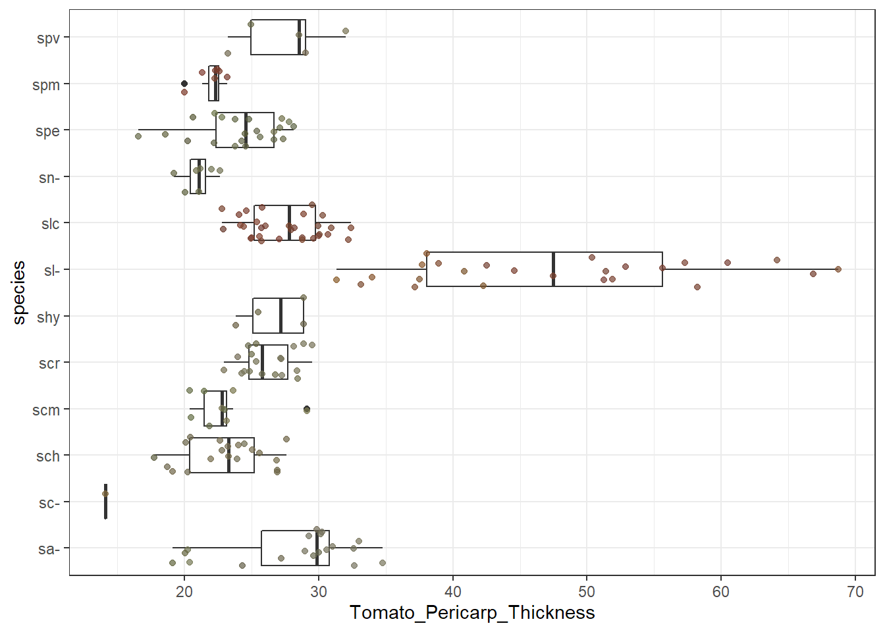
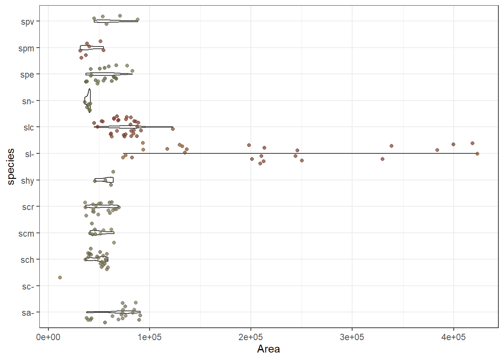

tmt0805 <- read_csv("D:/School/Caicedo Lab/0805.csv")Each image file contains the first 3 letters as the species name, rather than create a concatenated set of preset names, I just took the first 3 letter from each image_file string name and created a new species column as shown below. The only problem here is that two letter species names, such as SL, will have a - followed by SL.
tmt0805$species <- substr(tmt0805$tomatoes, 1, 3)
tmt0805dt <- tmt0805 %>%
select(species, tomatoes, Tomato_Pericarp_Thickness)
datatable(head(tmt0805dt, 100))tmt0805thickness <- tmt0805 %>%
filter(!is.na(R))This is my first plot after trying to figure out how to group species. Using the substring method seems to have worked, and the results look good, except for the one lonely sc with 1 sample size ):
ggplot(data = tmt0805thickness, aes(x = Tomato_Pericarp_Thickness, y = species))+
geom_boxplot() +
geom_jitter(color = rgb(tmt0805thickness$R, tmt0805thickness$G, tmt0805thickness$B, maxColorValue = 255), alpha = 0.7) +
theme_bw()
ggplot(data = tmt0805thickness, aes(x = Area, y = species))+
geom_violin() +
geom_jitter(color = rgb(tmt0805thickness$R, tmt0805thickness$G, tmt0805thickness$B, maxColorValue = 255), alpha = 0.7) +
theme_bw()
The benefit of using avg RGB values as a comparative variable.
Here the points are color coded based on each individual tomato’s corresponding RGB values.
ggplot(data = tmt0805thickness, aes(x = Area, y = Tomato_Pericarp_Thickness))+
geom_point(size = 2, color = rgb(tmt0805thickness$R,tmt0805thickness$G, tmt0805thickness$B, maxColorValue = 255)) +
#geom_jitter(color = rgb(tmt0805thickness$R, tmt0805thickness$G, tmt0805thickness$B, maxColorValue = 255), alpha = 0.7) +
theme_bw()Using individual RGB values to understand other color values better
Chroma is a measurement of how much color is stripped away by adding grays, whites, or blacks. Higher chroma indicates more saturation or brightness. Naturally, green tomatoes exhibit lower chroma because reds in tomatoes are much more vibrant than greens.
This is a good way of comparing color values with the actual phenotypic color of the individual tomato. In this particular case, knowing that the tomatoes on the lower end of the X axis are green helps comprehend the meaning of the chroma value.
ggplot(data = tmt0805thickness, aes(x = Average_Chroma, y = species))+
geom_boxplot() +
geom_jitter(color = rgb(tmt0805thickness$R, tmt0805thickness$G, tmt0805thickness$B, maxColorValue = 255), alpha = 0.9) +
theme_bw()